<div class="section__header">
    <button class="hamburger hamburger--spin" type="button" aria-label="menu" data-hamburger>
        <span class="hamburger-box">
            <span class="hamburger-inner"></span>
        </span>
        <span class="hamburger-label">Menu</span>
    </button>
    <div class="container">
        <nav class="nav__main">
            <ul>
                <li><a href="#about">Over Taberna</a></li>
                <li><a href="#pictures">Sfeerimpressie</a></li>
                <li><a href="#agenda">Agenda</a></li>
                <li><a href="#menu">Menukaart</a></li>
            </ul>
        </nav>
        <div class="logo">
            
        </div>
        <section class="reachability">
            <div class="reachability__hours">
                Openingstijden Keuken winter<br>
                Maandag en dinsdag gesloten (op reservering voor groepen)<br>
                Woensdag en zaterdag: 10:00u - 18:00u<br>
                Donderdag en vrijdag: 10:00u - 20:00u<br>
                Koopzondagen: 12:00u - 18:00u<br>
            </div>
            <div class="reachability__contact">
                Taberna Weert<br>
                Beekstraat 60a<br>
                <a href="tel://0495586339">Tel: 0495 586 339</a><br>
                <a href="mailto:info@tabernaweert.nl">info@tabernaweert.nl</a><br>
                <a href="https://www.facebook.com/tabernaweert/">Taberna Facebook</a>
            </div>
        </section>
    </div>
</div>